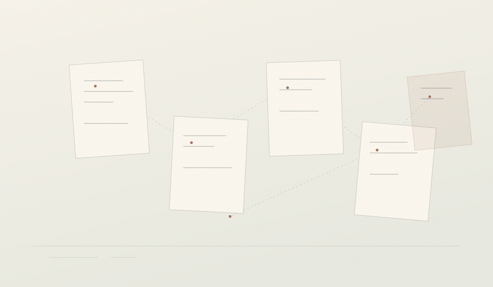

一封信图书馆
向十个朋友各要一封「写给三年后的自己」的信。打印、编号、装进信封，封好，写上开启日期。三年后原封不动地还给他们——你是唯一的馆长。
房间二 · 项目 / Projects
不是为了发出来给人看，也不是为了让自己变得更高效。这些项目都足够安静，可以在没有人知道的情况下完成； 它们只要求你花一点时间，把注意力放回自己身上。

The List · 清单
从最简单的那个开始也没关系。完成比完成得好重要。
向十个朋友各要一封「写给三年后的自己」的信。打印、编号、装进信封，封好，写上开启日期。三年后原封不动地还给他们——你是唯一的馆长。
手绘一张城市地图，只标出你能在夜里独自走、并且觉得安全的路。每条路旁边写一句当时在想什么。这是一份只对你自己有效的安全感说明书。
只问一个问题：「你最近在为什么事难过？」然后听满二十分钟，不打断、不建议、不接话。你会发现，大多数人只是需要一个不被修正的听众。
连续十四天，记下每一次社交之后的电量变化（−3 到 +3），以及场合、人数、认识了谁。两周后你会得到一份关于自己边界的、非常诚实的数据。
每月读一本只为自己读的书，写一页从不发表的笔记，夹回书里。不评分、不打卡、不分享。书页会替你记住那一个月你在意什么。
给还留着的旧物逐件拍照，写下它从哪里来、是谁给的、为什么一直没扔。拍完你会知道，自己其实一直在保存哪几种东西。
写二十张纸条，每张只写一句你希望有人对你说过的话。把它们留在图书馆的书里、旧书店的架上、公园的长椅上。不署名，也不回头看谁拿走了。
Note · 说明
一，不需要告诉任何人你在做这些事。二，中途停下来不算失败，那只是这个项目的一部分。 三，如果某个项目让你连续几天都很低落，就把它关掉——它本来是用来照顾你的。